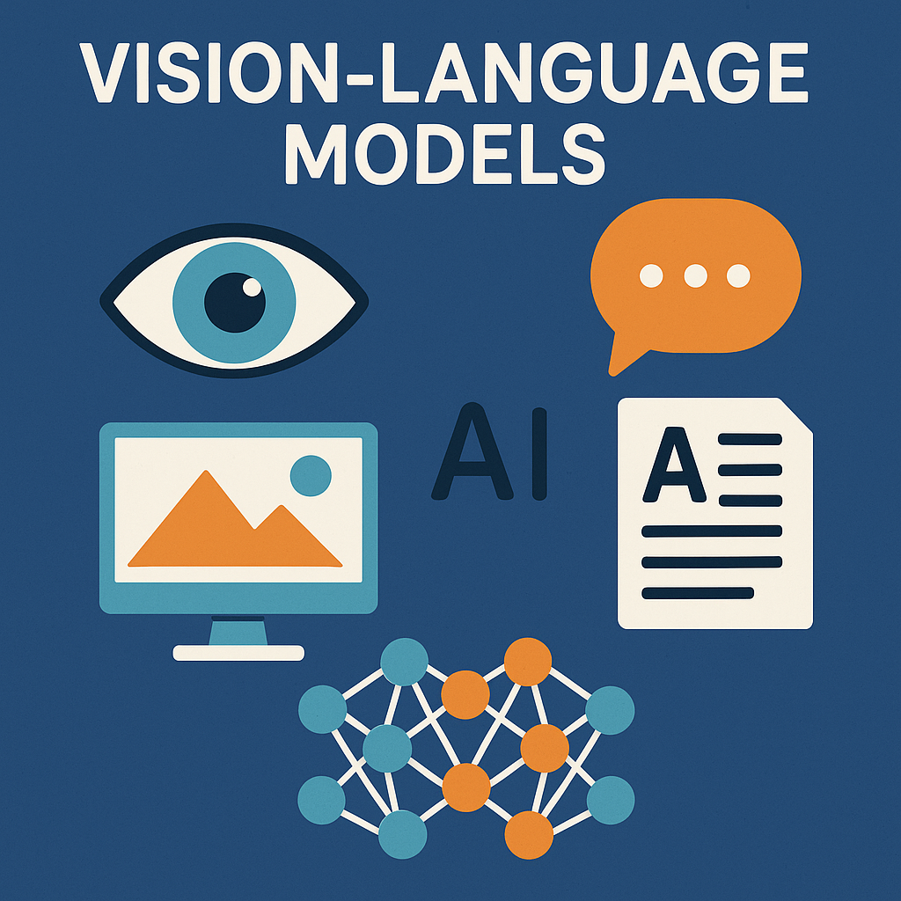

Vision-Language Models: Bridging Visual and Textual Understanding

Vision-Language Models (VLMs) represent one of the most exciting frontiers in artificial intelligence, combining computer vision and natural language processing to create systems that can understand and reason about both images and text simultaneously. These multimodal models are revolutionizing how machines interpret the world around us.
What Are Vision-Language Models?
Vision-Language Models are neural networks designed to process and understand both visual and textual information. Unlike traditional models that handle only one modality, VLMs can:
- Describe images in natural language
- Answer questions about visual content
- Generate images from text descriptions
- Perform visual reasoning tasks
- Extract and understand text within images
The key innovation lies in their ability to create shared representations that bridge the semantic gap between visual and linguistic information.
Architecture Deep Dive
Core Components
Most modern VLMs follow a encoder-decoder architecture with several key components:
class VisionLanguageModel:
def __init__(self):
self.vision_encoder = VisionTransformer()
self.text_encoder = TextTransformer()
self.cross_attention = CrossAttentionLayer()
self.decoder = LanguageDecoder()
def forward(self, image, text):
# Extract visual features
visual_features = self.vision_encoder(image)
# Extract textual features
text_features = self.text_encoder(text)
# Cross-modal attention
fused_features = self.cross_attention(
visual_features, text_features
)
# Generate output
output = self.decoder(fused_features)
return outputVision Encoder
The vision component typically uses:
- Vision Transformers (ViTs): Split images into patches and process them as sequences
- Convolutional Neural Networks: Extract hierarchical visual features
- Region-based methods: Focus on specific image regions
def patch_embedding(image, patch_size=16):
"""Convert image to patch embeddings"""
patches = image.unfold(2, patch_size, patch_size)
patches = patches.unfold(3, patch_size, patch_size)
# Flatten patches and create embeddings
patch_embeddings = patches.reshape(-1, patch_size * patch_size * 3)
return patch_embeddingsText Encoder
Text processing leverages transformer architectures:
- BERT-style encoders: For understanding input text
- GPT-style decoders: For generating responses
- Tokenization: Converting text to numerical representations
Cross-Modal Fusion
The critical challenge is combining visual and textual information:
class CrossAttention(nn.Module):
def __init__(self, dim):
super().__init__()
self.attention = nn.MultiheadAttention(dim, num_heads=8)
def forward(self, visual_features, text_features):
# Use text as query, vision as key and value
attended_features, _ = self.attention(
query=text_features,
key=visual_features,
value=visual_features
)
return attended_featuresTraining Strategies
Contrastive Learning
Many VLMs use contrastive learning to align visual and textual representations:
def contrastive_loss(image_features, text_features, temperature=0.07):
"""CLIP-style contrastive loss"""
# Normalize features
image_features = F.normalize(image_features, dim=-1)
text_features = F.normalize(text_features, dim=-1)
# Compute similarity matrix
similarity = torch.matmul(image_features, text_features.T) / temperature
# Create labels (diagonal should be positive pairs)
labels = torch.arange(len(image_features))
# Compute loss
loss_i2t = F.cross_entropy(similarity, labels)
loss_t2i = F.cross_entropy(similarity.T, labels)
return (loss_i2t + loss_t2i) / 2Multi-Task Learning
VLMs often train on multiple objectives simultaneously:
- Image-text matching
- Masked language modeling
- Image captioning
- Visual question answering
Data Requirements
Training requires massive paired datasets:
class VLMDataset:
def __init__(self, image_paths, captions):
self.image_paths = image_paths
self.captions = captions
self.transform = transforms.Compose([
transforms.Resize((224, 224)),
transforms.ToTensor(),
transforms.Normalize(mean=[0.485, 0.456, 0.406],
std=[0.229, 0.224, 0.225])
])
def __getitem__(self, idx):
image = Image.open(self.image_paths[idx])
image = self.transform(image)
caption = self.captions[idx]
return {
'image': image,
'caption': caption,
'image_id': idx
}Popular VLM Architectures
CLIP (Contrastive Language-Image Pre-training)
CLIP learns visual concepts from natural language supervision:
class CLIP(nn.Module):
def __init__(self, vision_model, text_model):
super().__init__()
self.vision_model = vision_model
self.text_model = text_model
self.logit_scale = nn.Parameter(torch.ones([]) * np.log(1/0.07))
def forward(self, image, text):
image_features = self.vision_model(image)
text_features = self.text_model(text)
# Normalize features
image_features = image_features / image_features.norm(dim=-1, keepdim=True)
text_features = text_features / text_features.norm(dim=-1, keepdim=True)
# Compute similarities
logit_scale = self.logit_scale.exp()
logits_per_image = logit_scale * image_features @ text_features.t()
return logits_per_imageBLIP (Bootstrapping Language-Image Pre-training)
BLIP uses a unified architecture for multiple vision-language tasks:
- Encoder for understanding
- Encoder-decoder for generation
- Decoder for language modeling
Flamingo
Flamingo excels at few-shot learning by conditioning on visual examples:
class FlamingoLayer(nn.Module):
def __init__(self, dim):
super().__init__()
self.cross_attention = CrossAttention(dim)
self.feed_forward = FeedForward(dim)
def forward(self, text_features, visual_features):
# Cross-attention between text and vision
attended = self.cross_attention(text_features, visual_features)
# Add residual connection
text_features = text_features + attended
# Feed forward
output = self.feed_forward(text_features)
return outputImplementation Example
Here’s a simplified VLM implementation for image captioning:
import torch
import torch.nn as nn
from transformers import GPT2LMHeadModel, GPT2Tokenizer
from torchvision.models import resnet50
class SimpleVLM(nn.Module):
def __init__(self, vocab_size=50257, hidden_dim=768):
super().__init__()
# Vision encoder
self.vision_encoder = resnet50(pretrained=True)
self.vision_encoder.fc = nn.Linear(2048, hidden_dim)
# Language model
self.language_model = GPT2LMHeadModel.from_pretrained('gpt2')
# Projection layer
self.visual_projection = nn.Linear(hidden_dim, hidden_dim)
def forward(self, images, input_ids, attention_mask=None):
# Extract visual features
visual_features = self.vision_encoder(images)
visual_features = self.visual_projection(visual_features)
# Add visual features as prefix to text
batch_size = visual_features.size(0)
visual_tokens = visual_features.unsqueeze(1) # [B, 1, H]
# Get text embeddings
text_embeddings = self.language_model.transformer.wte(input_ids)
# Concatenate visual and text embeddings
combined_embeddings = torch.cat([visual_tokens, text_embeddings], dim=1)
# Generate text
outputs = self.language_model(
inputs_embeds=combined_embeddings,
attention_mask=attention_mask
)
return outputs
# Training loop
def train_vlm(model, dataloader, optimizer, device):
model.train()
total_loss = 0
for batch in dataloader:
images = batch['images'].to(device)
captions = batch['captions'].to(device)
# Forward pass
outputs = model(images, captions[:, :-1])
# Compute loss
loss = nn.CrossEntropyLoss()(
outputs.logits.reshape(-1, outputs.logits.size(-1)),
captions[:, 1:].reshape(-1)
)
# Backward pass
optimizer.zero_grad()
loss.backward()
optimizer.step()
total_loss += loss.item()
return total_loss / len(dataloader)Evaluation Metrics
VLMs are evaluated using various metrics depending on the task:
Image Captioning
- BLEU: Measures n-gram overlap with reference captions
- ROUGE: Evaluates recall-oriented similarity
- CIDEr: Consensus-based metric for image description
- SPICE: Semantic similarity metric
def compute_bleu_score(predictions, references):
from nltk.translate.bleu_score import corpus_bleu
# Tokenize predictions and references
pred_tokens = [pred.split() for pred in predictions]
ref_tokens = [[ref.split() for ref in refs] for refs in references]
# Compute BLEU score
bleu_score = corpus_bleu(ref_tokens, pred_tokens)
return bleu_scoreVisual Question Answering
- Accuracy: Exact match with ground truth answers
- F1 Score: Harmonic mean of precision and recall
Image-Text Retrieval
- Recall@K: Fraction of queries where correct answer is in top-K results
- Mean Reciprocal Rank: Average of reciprocal ranks of correct answers
Applications and Use Cases
Content Generation
def generate_caption(model, image, tokenizer, max_length=50):
model.eval()
with torch.no_grad():
# Process image
image_tensor = preprocess_image(image)
# Generate caption
generated_ids = model.generate(
image_tensor,
max_length=max_length,
num_beams=5,
temperature=0.8
)
# Decode caption
caption = tokenizer.decode(generated_ids[0], skip_special_tokens=True)
return captionDocument Understanding
VLMs excel at processing documents with both text and visual elements:
- Form understanding
- Chart and graph interpretation
- Layout analysis
- OCR with context
Accessibility
- Image description for visually impaired users
- Scene understanding for navigation
- Object recognition and identification
E-commerce
- Product description generation
- Visual search and recommendation
- Quality assessment from images
Challenges and Limitations
Computational Requirements
VLMs require significant computational resources:
def estimate_memory_usage(batch_size, image_size, model_params):
"""Estimate GPU memory usage"""
image_memory = batch_size * 3 * image_size * image_size * 4 # bytes
model_memory = model_params * 4 # 4 bytes per parameter
activation_memory = batch_size * model_params * 0.3 # rough estimate
total_gb = (image_memory + model_memory + activation_memory) / (1024**3)
return total_gbBias and Fairness
VLMs can perpetuate biases present in training data:
- Gender and racial stereotypes
- Cultural biases in image interpretation
- Socioeconomic biases in scene understanding
Hallucination
Models may generate plausible but incorrect descriptions:
def detect_hallucination(caption, image_objects):
"""Simple hallucination detection"""
mentioned_objects = extract_objects_from_caption(caption)
hallucinated_objects = []
for obj in mentioned_objects:
if obj not in image_objects:
hallucinated_objects.append(obj)
return hallucinated_objectsFuture Directions
Multimodal Reasoning
Advanced VLMs are moving toward more sophisticated reasoning:
- Temporal understanding in videos
- Spatial reasoning in 3D scenes
- Causal reasoning from visual evidence
Efficiency Improvements
Research focuses on making VLMs more efficient:
- Model compression and pruning
- Knowledge distillation
- Efficient attention mechanisms
Interactive Systems
Future VLMs will support more interactive applications:
- Conversational visual AI
- Real-time visual assistance
- Collaborative human-AI systems
Best Practices for Implementation
Data Preparation
def prepare_vlm_dataset(image_dir, caption_file):
"""Prepare dataset for VLM training"""
dataset = []
with open(caption_file, 'r') as f:
for line in f:
data = json.loads(line)
image_path = os.path.join(image_dir, data['image'])
# Quality checks
if os.path.exists(image_path) and len(data['caption']) > 10:
dataset.append({
'image_path': image_path,
'caption': data['caption'],
'metadata': data.get('metadata', {})
})
return datasetModel Optimization
- Use mixed precision training
- Implement gradient checkpointing
- Apply learning rate scheduling
- Monitor for overfitting
Deployment Considerations
- Model quantization for edge deployment
- Caching strategies for repeated queries
- Load balancing for high-traffic applications
Conclusion
Vision-Language Models represent a paradigm shift toward more human-like AI systems that can understand and reason about the visual world through natural language. As these models continue to evolve, they promise to unlock new possibilities in human-computer interaction, accessibility, content creation, and automated understanding of our increasingly visual digital world.
The field continues to advance rapidly, with ongoing research addressing current limitations while pushing the boundaries of what’s possible when machines can truly see and understand the world around them. For developers and researchers, VLMs offer exciting opportunities to build applications that bridge the gap between human perception and machine understanding.